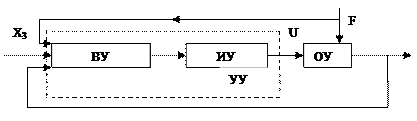
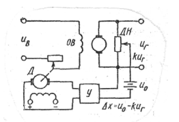

Общие сведения о подсистемах автоматического управления и организации их функционирования в ЭСБ
Виды, классификация и основные характеристики систем автоматического управления (САУ)
Теория автоматического управления (ТАУ) — научная дисциплина, которая изучает процессы автоматического управления объектами разной физической природы. При этом при помощи математических средств выявляются свойства систем автоматического управления и разрабатываются рекомендации по их проектированию.
Теория автоматического управления появилась во второй половине 19 века сначала как теория регулирования. Широкое применение паровых машин вызвало потребность в регуляторах, то есть в специальных устройствах, поддерживающих устойчивый режим работы паровой машины. Это дало начало научным исследованиям в области управления техническими объектами. Оказалось, что результаты и выводы данной теории могут быть применимы к управлению объектами различной природы с различными принципами действия.
Основные понятия:
Автоматика — отрасль науки и техники, охватывающая теорию и практику автоматического управления, а также принципы построения автоматических систем и образующих их технических средств.
Объект управления (ОУ) — устройство, физический процесс либо совокупность процессов, которыми необходимо управлять для получения требуемого результата. Взаимодействие с ОУ происходит путём подачи на его условный вход управляющего воздействия (которое корректирует процессы, протекающие в ОУ), при этом на выходе получается изменённый параметр (который является процессом-следствием).
Управление — процесс, подаваемый на вход объекта управления, обеспечивающий такое протекание процессов в объекте управления, которое обеспечит достижение заданной цели управления на его выходе.
Цель — желаемое протекание процессов в объекте управления и получение нужного изменения параметра на его выходе.
Функциональные схемы
Функциональная схема элемента — схема системы автоматического регулирования и управления, составленная по функции, которую выполняет данный элемент. Пример функциональной схемы представлен на рисунке 1
Выходные сигналы — параметры, характеризующие состояние объекта управления и существенные для процесса управления.
Выходы системы — точки системы, в которых выходные сигналы могут наблюдаться в виде определенных физических величин.
Входы системы — точки системы, в которых приложены внешние воздействия.
Рисунок 1 – Функциональная схема САУ
Входные сигналы:
– помехи – это сигналы, не связанные с источниками информации о задачах и результатах управления.
– полезные – это сигналы, связанные с источниками информации о задачах и результатах управления.
Системы:
– одномерные – системы с одним входом и одним выходом.
– многомерные – системы с несколькими входами и выходами.
Управление каким-либо объектом (ОУ) — это процесс воздействия на него с целью обеспечения требуемого течения процессов в объекте или требуемого изменения его состояния (рисунок 2). Основой управления является переработка информации о состоянии ОУ.

Рисунок 2 – Схема САУ
Управление может осуществляться как человеком, так и техническим устройством. Управление без участия человека называется автоматическим. Техническое устройство, с помощью которого осуществляется автоматическое управление, называется управляющим устройством (УУ). Совокупность УУ и ОУ составляет САУ. Состояние ОУ характеризуется выходной величиной х, на вход ОУ подается управляющее воздействие U. F – возмущающее воздействие или помеха, которое изменяет состояние ОУ и препятствует управлению. Х3 – задающее воздействие, содержащее информацию о цели управления, т.е. о требуемом значении х.
Вычислительное устройство (измерительное устройство, датчик) служит для измерения подаваемых на УУ воздействий и сигналов Х, Х3, F. Реализует алгоритм работы УУ.
Исполнительное устройство служит для непосредственного управления объектом, для изменения его состояния в соответствии с сигналами, выдаваемыми ВУ.
В состав САУ могут входить различные специальные устройства - преобразователи.
Классификация систем и элементов
По характеру действия различают:
1. Система автоматического управления (САУ).
2. Система автоматического регулирования (САР).
3. Система автоматического контроля (САК).
4. Система автоматической защиты (САЗ).
Под САР понимается система, в которой после вывода координат объекта в заданную точку эти координаты следует удерживать в окрестности этой точки при действии на объект различных возмущающих воздействий. Могут работать по замкнутому, разомкнутому и комбинированному циклам. Бывают статические и астатические.
По характеристикам звеньев, входящих в систему:
– линейные
– нелинейные,
– импульсные
– релейно–импульсные.
Под САК понимают системы, которые контролируют параметры технологических процессов или состояния объектов управления. Обычно являются разомкнутыми (звуковая или световая сигнализация).
САЗ используются для отключения поврежденного ОУ или для прекращения хода всего технологического процесса.
Под САУ следует понимать системы, которые обеспечивают перевод координат ОУ из точки начального положения в заданную точку. В зависимости от характера движения САУ делятся на 5 видов:
– простые системы управления (СУ) (нагрев печи);
– системы оптимального управления, при котором движение координат ОУ к заданной точке протекает за определенное время (когда скорость нагрева печи ограничена технологическим процессом);
– системы программного управления: движение осуществляется по заданной программе (металлорежущие станки);
– системы экстремального управления (системы, в которых самостоятельно определяется наиболее выгодный режим работы ОУ);
– системы функционального управления (когда движение начинается при выполнении совокупности операций).
Классификация систем представлена на рисунке 3
Рисунок 3 – Классификация САУ
Также различают:
По виду управляющих воздействий:
• аналоговые
• дискретные (прерывные, импульсные, цифровые)
По степени участия человека:
• ручные
• автоматические
• автоматизированные (человек в управлении)
По количеству управляемых и регулируемых переменных:
• одномерные
• многомерные
По воздействию чувствительного (измерительного) элемента на регулирующий орган
• системы прямого управления
• системы косвенного управления
Измерительно-преобразовательный элемент (датчик) предназначен для получения информации о текущем состоянии ОУ и преобразования ее в форму, пригодную для работы элемента сравнения.
Усилительно-преобразовательный элемент предназначен для усиления и преобразования сигнала за счет вспомогательного источника питания до величины, достаточной и удобной для работы последующих элементов САУ.
Задающий элемент - выработка требуемого сигнала может быть реализована на элементах памяти или в виде программного механизма.
Сравнивающий элемент - для получения рассогласования между требуемым значением управляемой координаты (задаваемым сигналом задатчика) и оценкой ее действительного состояния, определяемого выходным сигналом измерительного преобразователя.
Исполнительные элементы, служащие для отработки управляющего сигнала (двигатели, клапаны, заслонки), иногда совмещают с усилительно- преобразовательным в едином блоке.
Корректирующие элементы - для улучшения динамических свойств системы.
Вспомогательные элементы используются для согласования сигналов между непрерывной и импульсно-цифровой частями САУ.
Унификация элементов САУ
Осуществляется в рамках государственной системы приборов и средств автоматизации (ГСП). В основу построения ГСП положен один из основных системных принципов, а именно принцип совместимости отдельных элементов:
• информационной
• энергетической
• метрологической
• конструктивной
• эксплуатационной.
Передача информации в системе управления между сопряженными элементами осуществляется унифицированными сигналами электрической или пневматической ветви.
Сигналы электрической ветви подразделяется на следующие классы:
1. непрерывные сигналы тока и напряжения;
2. непрерывные частотные сигналы.
3. кодирование.
Стандарт регламентирует предел изменения сигналов каждого вида. Для токовых сигналов постоянного тока 0-5 мА, 0-20мА
Для сигналов напряжения:
• постоянного тока 0-10мВ, 0-100мВ;
• переменного тока 0-10В, -10…0…+10В.
Для пневматических сигналов 0,02-0,14 Па.
Фундаментальные принципы построения САУ
В основе построения систем автоматического управления лежат общие фундаментальные принципы, определяющие, каким образом осуществляется увязка алгоритмов функционирования и управления с фактическим функционированием или причинами, вызывающими отклонение функционирования от данного. В современной технике используются три фундаментальных принципа: разомкнутого управления, компенсации и обратной связи.
Принцип разомкнутого управления. Сущность принципа состоит в том, что алгоритм управления вырабатывается только на основе заданного алгоритма функционирования системы, т.е. выходные параметры системы определяются только входными воздействиями и никак не корректируются с учетом внешних возмущений или полученных на выходе значений параметров процесса (рис.4.).
Рисунок 4 – САУ с разомкнутым управлением
1 - задатчик программы; 2 - управляющее устройство; 3 - выходной элемент;
Общая функциональная схема системы показана на рис 4. Задание алгоритма функционирования может осуществляться как специальным техническим устройством – задатчиком программы 1, так и выполняться заранее при проектировании и затем непосредственно использоваться при конструировании управляющего устройства 2. В обеих случаях система имеет вид разомкнутой цепочки, в которой основное воздействие передается от входного элемента к выходному элементу 3, как показано на рис. 4., что и дало название данному принципу управления. Близость х и х0 обеспечивается только конструкцией и подбором физических закономерностей, действующих во всех элементах.
Принцип компенсации (управление по возмущению). Если возмущающие воздействия настолько велики, что разомкнутая цепь не обеспечивает требуемой точности выполнения алгоритма функционирования, то для повышения точности иногда возможно, измерив возмущение z (рис. 5.), ввести по результатам измерения коррективы в алгоритм управления, которые компенсировали бы вызываемые возмущениями отклонения алгоритма функционирования. Функциональная схема регулирования по возмущению приведена на рис. 5.
Рисунок 5 - Схема регулировки САУ по возмущению:
1 – задатчик программы; 2 – управляющее устройство; 3 – выходной элемент; 4 – элемент обратной связи
Так как отклонение от регулируемой величины зависти не только от управляющего воздействия u, но и от возмущающего z воздействия, то в принципе возможно подобрать управляющее воздействие таким образом, чтобы в установившемся режиме отклонение отсутствовало.
Принцип обратной связи. Регулирование по отклонению. Систему можно построить и так, чтобы точность выполнения алгоритма функционирования обеспечивалась и без измерения возмущения.
Рисунок 6 - Схема регулировки САУ с обратной связью
На рис 6 показана схема, в которой коррективы в алгоритм управления вносятся по фактическому значению регулируемого параметра. Для этой цели в конструкцию вводят дополнительную связь 4, в которую могут входить элементы для измерения х и для выработки корректирующих воздействий на управляющее устройство. Введенную дополнительную цепь называют цепью обратной связи, так как направление передачи воздействий в дополнительной цепи обратно направлению передачи основного воздействия на объект. Схема, изображенная на рис. 6, представляет собой наиболее общий вид замкнутых систем.
По такой системе строят, например, многие преобразовательные и счетно–решающие элементы. В управлении же наиболее широко распространен частный вид замкнутых систем, в которых коррекцию алгоритма управления осуществляют не непосредственно по значениям выходного параметра х, а по отклонениям от значений, определяемых алгоритмом функционирования х0, т.е. ∆х = х0 – ∆х. В схеме, представленной на рис. 6, элемент 1 задает алгоритм функционирования, а элемент сравнения (сумматор Σ) осуществляет вычитание х из х0, т.е. вырабатывает величину ∆х, называемую отклонением или ошибкой управления.
На рис. 7 – 9 приведены схемы стабилизаторов напряжения, реализующие различные принципы регулирования.
В разомкнутой САУ (рис. 7) задаваемая величина реализуется ВАХ стабилитрона, регулируемая величина – выходное напряжение.
В САУ с компенсацией компенсация температурного воздействия происходит за счет того, что под действием температуры стабилитрон имеет положительное изменение сопротивления, а диод – отрицательное (рис. 8).
Рисунок 7 - Пример САУ с разомкнутым управлением
Рисунок 8 - Пример САУ с компенсацией
Рисунок 9 - Пример САУ с обратной связью
САУ с обратной связью регулирование происходит за счет обратной связи с выход транзистора, играющего роль регулирующего элемента (РЭ) на вход операционного усилителя.
В некоторых схемах мощности сигнала ∆х оказывается недостаточно для непосредственного управления регулируемым параметром, поэтому могут использоваться усилители. Такие системы называют системами непрямого регулирования. В маломощных системах иногда можно применить прямое регулирование, управляя исполнительным органом непосредственно от сигнала ошибки.
Рисунок 10 - Комбинированное регулирование
В ряде случаев эффективно применение комбинированного регулирования по возмущению и отклонению (рис. 7). Комбинированные регуляторы объединяют достоинства обоих принципов – быстроту реакции на изменение возмущений и точное регулирование независимо от того, какая причина вызвала отклонение.
Фундаментальные принципы управления могут реализовываться с помощью различных видов автоматического управления. В настоящее время известны следующие основные виды автоматического управления: стабилизация, программное управление, следящие системы, оптимальное управление, адаптивные системы, системы с поиском экстремума показателя качества.
Стабилизация. Системы поддержания постоянства управляемой величины называют также системами стабилизации. Простейшая система стабилизации приведена на рис 11.
В данном случае с делителя напряжения ДН снимается напряжение kuг, пропорциональное регулируемому напряжению uг. Оно сравнивается с напряжением u0 эталонной батареи. Разность ∆x = u0 − k ⋅ uг подается на вход усилителя У, к выходу которого подключен якорь двигателя постоянного тока Д. Двигатель приводит в движение регулирующий орган – реостат, включенный в цепь обмотки возбуждения ОВ генератора. При увеличении uг сверх заданного значения двигатель переместит ползунок реостата так, чтобы сопротивление реостата увеличилось, и напряжение, подводимое к ОВ, уменьшилось. Следствием будет уменьшение подводимого напряжения.

Рисунок 11 - Типичная схема САУ со стабилизацией ДН –делитель напряжения; ОВ – обмотка возбуждения; У – усилитель; Д – двигатель
Рассмотрим схему с простейшими линейными преобразовательными звеньями Z.
Рисунок 12 - Схема с простейшими линейными преобразовательными звеньями
Уравнения, связывающие значение выходной величины х с возмущающим воздействием z и управляющим воздействием u, в случае установившегося режима имеют вид [1,2]:
k0, kp, kz – постоянные коэффициенты, называемые соответственно коэффициентами передачи объекта, регулятора и нагрузки.
Из уравнений (1.1) и (1.2) очевидно, что значение регулируемой величины х зависит от нагрузки z, уменьшаясь с ее ростом.
Регулирование, при котором установившаяся ошибка при постоянном значении х0 зависит от нагрузки, называется статическим. Установившаяся статическая ошибка равна:

Статический регулятор поддерживает постоянное значение регулируемой величины с ошибкой. Статизм – это величина относительной статической ошибки при изменении нагрузки от холостого хода од номинальной. В некоторых системах статическая ошибка нежелательна, тогда переходят к регулированию, при котором она в силу структуры системы равна нулю, т.е к астатическому регулированию. Для получения астатического регулирования в регуляторе нужно устранить жесткую зависимость между положением регулирующего органа и значением регулируемой величины, с тем, чтобы одно и тоже значение регулируемой величины поддерживалось при любой нагрузке. Для этого в цепь вводят астатическое звено.
Программное управление. При программном управлении алгоритм функционирования задан и можно построить специальное устройство – датчик программы, вырабатывающее х0(t). В практике используют два вида систем программного управления: системы с временной программной и системы с пространственной программой. В системах первого вида задатчик программы вырабатывает непосредственно х0(t). Системы второго вида используют в программном управлении иной принцип: в них движение исполнительного органа (инструмента) осуществляется по заданной траектории, закон же движения по траектории во времени мало существен и широких пределах может быть произвольным.
Используются два способа пространственного программного управления. В первом случае движение по каждой из координатных осей выполняется отдельным приводом, движение по одной из осей задается произвольно (обычно равномерным), а остальные движения увязываются с первым так, чтобы инструмент двигался по заданной траектории. Второй способ состоит в том, что заданная траектория описывается с помощью системы параметрических уравнений, в которых параметром является время, а затем строится решающее устройство, задающее движение приводам по отдельным осям в соответствии с этими параметрическими уравнениями.
Системы программного управления по своей структуре также могут быть статическими и астатическими, однако, поскольку величины х0(t) и z в них непостоянны, статическая ошибка не устраняется, так как возникают установившиеся ошибки, зависящие от скорости и высших производных, в связи с чем для устранения ошибок в данных системах также необходимо вводить астатические звенья.
Следящие системы. В следящих системах алгоритм функционирования заранее не известен. Обычно регулируемая величина в таких системах воспроизводит изменение некоторого внешнего фактора, «следит» за ним. Так, автоматически управляемые средства ПВО должны поворачиваться, следуя за поворотом цели. Следящая система может быть выполнена в соответствии с любым фундаментальным принципом и отличается от системы с программным управлением тем, что в ней вместо задатчика программ в ней будет помещено устройство слежения за изменениями внешнего фактора.
В качестве примера следящей системы на рис. 10. приведена упрощенная схема отработки угла. Регулируемой величиной является угол поворота управляемого объекта 2. Приводной двигатель 3 питается от электромашинного усилителя 1. Входное воздействие подается на сельсин – датчик 5 в виде углового поворота его ротора. Соединенные по трансформаторной схеме сельсин-датчик и сельсин – приемник 4, механически связанный с нагрузкой, вырабатывает напряжение, пропорциональное рассогласованию ε = θвых − θвх между входным и выходным валами следящей системы. Напряжение ошибки усиливается усилителями У1 и У2 и электромашинным усилителем 1 и поступает на якорь исполнительного двигателя 3, вращающего одновременно объект (нагрузку) 2 и ротор сельсина-приемника до тех пор, пока рассогласование не станет равным нулю.
Рисунок 13 - Схема следящей системы
Экстремальные системы. В экстремальных системах требуется, чтобы выходная величина принимала экстремальное значение из всех возможных, причем значение выходной величины заранее не определено и может изменяться случайным образом.
Рисунок 14 - Структура экстремальной системы
Для поиска экстремума система совершает небольшие пробные движения и анализирует реакцию выходной величины на эти движения. После этого вырабатывается управляющее воздействие, приближающее выходную величину к экстремальному значению. Процесс повторяется непрерывно. Так как в данных САУ происходит непрерывная оценка выходного параметра, то они выполняются только в соответствии с третьим принципом управления: управлением с обратной связью.
Оптимальное управление. Оптимальные системы являются самым сложным видом экстремальных систем, в которых происходит сложная обработка информации о характере влияния возмущающих воздействий на выходные величины, может быть задействована теоретическая информация, информация эвристического характера и т.д.
Нахождение оптимального управления в подобных динамических задачах требует решения в процессе управления достаточно сложной математической задачи методами вариационного исчисления или математического программирования в зависимости от вида математического описания (математической модели) системы.
Рисунок 15 - Cистема с оптимальным управлением
На вход вычислительного устройства (машины) ВМ поступает информация о текущих значениях параметров х с выхода объекта О, об управлениях u с его входа, о внешних воздействиях на объект z, а также задание извне различных условий: значение критерия оптимальности J, граничных условий х(0), х(∞), информация о допустимых значениях х∈Х и u∈U и т.п. Вычислительное устройство по заложенной в него программе вычисляет оптимальное управление u. Очевидно, что в оптимальных системах должны широко использоваться ЭВМ.
Адаптивные системы. В адаптивных системах предусмотрена возможность автоматической перенастройки параметров или принципиальной схемы САУ с целью приспособления к изменяющимся внешним условиям. В соответствии с этим различают самонастраивающиеся и самоорганизующиеся адаптивные системы.
Обычно адаптивная система содержит в качестве «ядра» схему, реализующую один из фундаментальных принципов управления, а контур адаптации пристраивают к ней как вторичный, осуществляющий коррекцию параметров.
Рисунок 16 - Схема адаптивной системы
Контур адаптации, обычно состоящий из устройства измерения ИУ, устройства вычисления ВУ и управления УУ, может быть, как разомкнутым (если на его вход подается только входное воздействие), или замкнутым, если он реагирует также и на выходной сигнал системы. Контур самонастройки воздействует на блок настройки параметров БНП, который может быть включен не только последовательно, как показано на рис. 16, но и любым другим способом, например, в цепь обратной связи. Вычисление воздействий для коррекции — весьма сложная математическая задача, поэтому в составе адаптивных систем используют различные модулирующие, счетно–решающие устройства и ЭВМ. Способы адаптации и соответствующие им схемы различаются главным образом алгоритмами и реализующими их программами.
Типовая функциональная схема САУ
На рисунке 17 представлена типовая функциональная схема САУ
Рисунок 17 - Функциональная схема САУ(САР) по отклонению
На рисунке 18 представлена упрощенная функциональная схема САУ по отклонению
Рисунок 18 - Упрощенная функциональная схема САУ по отклонению
Перечень функциональных блоков функциональной схемы САУ приведен в таблице 1.1
| Функциональный блок | Описание функционального блока |
| ЗУ | Задающее устройство |
| СУ | Сравнивающее устройство для сравнения заданного и действительного значений регулируемой величины |
| ПрУ | Преобразующее устройство |
| УУ | Управляющее устройство (регулятор), реализующее закон регулирования |
| ПсКУ | Последовательное корректирующее устройство для придания системе нужных динамических свойств |
| ВСУ | Вспомогательное сравнивающее устройство для суммирования сигналов местной обратной связи |
| УМ | Усилитель мощности управляющего сигнала |
| ИМ | Исполнительный механизм |
| РО | Регулирующий орган |
| О | Объект управления |
| ПрКУ | Параллельное корректирующее устройство для увеличения быстродействия исполнительного устройств |
| ИЭ | Измерительный элемент регулируемой величины |
| ПрГОС | Преобразователь сигнала главной обратной связи |
Алгоритмы автоматического управления и основные технические средства автоматики
Алгоритм функционирования — это совокупность правил, предписаний или математических зависимостей, определяющих правильное выполнение технологического процесса в каком-либо устройстве. Он составляется на основании технологических, экономических и других требований без учета динамических искажений.
Алгоритм управления — это совокупность, предписаний, определяющих характер управляющих воздействий на объект с целью осуществления им заданного алгоритма функционирования с учетом динамических свойств системы.
Программное управление – это, алгоритм функционирования при котором выходная величина объекта изменяется по заранее заданной программе. Различают системы с временным и пространственным программным управлением (искусственный рассвет, системы с программным управлением).
В инженерной практике нашли наибольшее применение т.н. типовые алгоритмы (законы регулирования):
- Пропорциональный (П):
- пропорционально-интегральный (ПИ) (пропорциональный с воздействием по интегралу (изодромный)):
- пропорциональный с воздействием по интегралу и первой производной (ПИД) (пропорционально-интегрально дифференциальный):
- пропорциональный с воздействием по первой производной (ПД) (пропорционально-дифференциальный):
где kR – коэффициент пропорциональности; Tи – время изодрома (время интегрирования); T∂ – время предварения
Представим наиболее общий случай построения систем автоматического управления, содержащий максимум элементов (рис. 19), где ЗЭ – задающий элемент, СЭ – сравнивающий элемент, ЧЭ – измерительный (чувствительный) элемент, ПЭ – преобразующий элемент, УЭ – усилительный элемент, ИЭ – исполнительный элемент, ОУ – объект управления, КУ – местная обратная связь, ГОС – главная обратная связь.
Рисунок 19 Система автоматического управления в общем виде
В зависимости от функций, выполняемых специальными автоматическими устройствами, различают следующие основные виды автоматизации:
1. Автоматический контроль, в который, в свою очередь, входят:
А) Автоматическая сигнализация – служит для оповещения персонала о наличии, характере и месте нарушения или достижения предельных значений параметров технологического процесса (ТП). К сигнальным устройствам относятся лампы, звонки, сирены, специальные мнемонические указатели и др.
Б) Автоматическое измерение – позволяет измерять и передавать на специальные приборы значения контролируемых параметров ТП и режимов работы машин и агрегатов.
В) Автоматическая сортировка – осуществляет идентификацию и разделение продукции по физико-механическим признакам: размеру, весу, твердости, зрелости (сортирование зерна, картофеля, арбузов и т. д.).
Г) Автоматический сбор информации о ходе ТП, видах, количестве и качестве выпускаемой продукции и т. д.
2. Автоматическая защита – это совокупность технических средств, реагирующих на анормальные и аварийные режимы протекания ТП с последующим его отключением, либо прекращением, либо автоматическим устранением неисправностей. Например: релейная защита электрические блокировки и автоблокировки в технологических линиях.
3. Дистанционные управление включает в себя методы и технические средства управления объектами на расстоянии включает в себя комплекс технических средств и методов по управлению объектами без участия.
4. Автоматическое управление включает в себя комплекс технических средств и методов по управлению объектами без участия обслуживающего персонала:
- пуск и останов основных установок;
- включение и отключение вспомогательных устройств;
- обеспечение безаварийной работы;
- соблюдение требуемых значений параметров в соответствии с оптимальным ходом технологического процесса.
По cтепени автоматизации различают следующие ее виды: частичную, комплексную и полную.
Частичная автоматизация – охват отдельных производственных операций или установок, не освобождая человека от участия в процессе, но облегчая его труд (раздача кормов на ферме).
Комплексная автоматизация – означает автоматическое выполнение всех операций при участии оператора.
Полная автоматизация – в отличие от комплексной без участия человека при выборе и согласовании режимов работы линий. Оператор лишь следит и перестраивает на новые производственные задачи.
Технические средства автоматизации и управления (ТСАУ) используются в САУ для решения следующих задач:
– сбор и преобразование информации о состоянии процесса;
– передача информации по каналам связи;
– преобразование, обработка и хранение информации;
– формирование команд управления;
– использование и предоставление информации для воздействия на процесс (использование энергии, механики, средств физических воздействий для влияния на процесс);
– предоставление информации оператору.
Перечислим классы основных технических средств, обеспечивающие решение сформулированных задач:
– средства на входе САУ — датчики;
– средства на выходе САУ — выходные преобразователи, исполнительные устройства;
– внутрисистемные устройства САУ — блоки регулирования, наблюдатели (они вычисляют дополнительную информацию или формируют управляющие воздействия);
– вспомогательные устройства — технико-документирующие, оборудование визуализации и оповещения.
Задачи оптимизации для выбора конкретных ТСАУ:
– по стоимости;
– по качеству;
– по надежности.